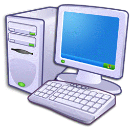
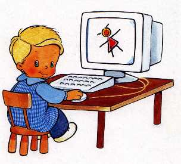

Informática

El vocablo informática proviene del francés automatique d'informations, acuñado por el ingeniero Philippe Dreyfus para su empresa «Société d'Informatique Appliquée» en 1962. Pronto adaptaciones locales del término aparecieron en italiano, español, rumano, portugués y holandés, entre otras lenguas, refiriéndose a la aplicación de las computadoras para almacenar y procesar la información. Es un acrónimo de las palabras information y automatique (información automática). En lo que hoy día conocemos como informática confluyen muchas de las técnicas, procesos y máquinas (ordenadores) que el hombre ha desarrollado a lo largo de la historia para apoyar y potenciar su capacidad de memoria, de pensamiento y de comunicación. En el Diccionario de la Real Academia Española se define informática como:1
Conjunto de conocimientos científicos y técnicas que hacen posible el tratamiento automático de la información por medio de ordenadores.
Conceptualmente, se puede entender como aquella disciplina encargada del estudio de métodos, procesos, técnicas, desarrollos y su utilización en ordenadores (computadoras), con el fin de almacenar, procesar y transmitir información y datos en formato digital. En 1957 Karl Steinbuch acuñó la palabra alemana Informatik en la publicación de un documento denominado Informatik: Automatische Informationsverarbeitung (Informática: procesamiento automático de información). En ruso, Alexander Ivanovich Mikhailov fue el primero en utilizar informatika con el significado de «estudio, organización, y la diseminación de la información científica», que sigue siendo su significado en dicha lengua.[cita requerida]. En inglés, la palabra Informatics fue acuñada independiente y casi simultáneamente por Walter F. Bauer, en 1962, cuando Bauer cofundó la empresa denominada «Informatics General, Inc.». Dicha empresa registró el nombre y persiguió a las universidades que lo utilizaron, forzándolas a utilizar la alternativa computer science. La Association for Computing Machinery, la mayor organización de informáticos del mundo, se dirigió a Informatics General Inc. para poder utilizar la palabra informatics en lugar de computer machinery, pero la empresa se negó. Informatics General Inc. cesó sus actividades en 1985, pero para esa época el nombre de computer science estaba plenamente arraigado. Actualmente los angloparlantes utilizan el término computer science, traducido a veces como «Ciencias de la computación», para designar tanto el estudio científico como el aplicado; mientras que designan como information technology (IT) o data processing, traducido a veces como «tecnologías de la información», al conjunto de tecnologías que permiten el tratamiento automatizado de información.
.jpg)
Orígenes
En los inicios del procesado de información, con la informática sólo se facilitaban los trabajos repetitivos y monótonos del área administrativa. La automatización de esos procesos trajo como consecuencia directa una disminución de los costes y un incremento en la productividad. En la informática convergen los fundamentos de las ciencias de la computación, la programación y metodologías para el desarrollo de software, la arquitectura de computadores, las redes de computadores, la inteligencia artificial y ciertas cuestiones relacionadas con la electrónica. Se puede entender por informática a la unión sinérgica de todo este conjunto de disciplinas. Esta disciplina se aplica a numerosas y variadas áreas del conocimiento o la actividad humana, como por ejemplo: gestión de negocios, almacenamiento y consulta de información, monitorización y control de procesos, industria, robótica, comunicaciones, control de transportes, investigación, desarrollo de juegos, diseño computarizado, aplicaciones/herramientas multimedia, medicina, biología, física, química, meteorología, ingeniería, arte, etc. Una de la aplicaciones más importantes de la informática es proveer información en forma oportuna y veraz, lo cual, por ejemplo, puede tanto facilitar la toma de decisiones a nivel gerencial (en una empresa) como permitir el control de procesos críticos. Actualmente es difícil concebir un área que no use, de alguna forma, el apoyo de la informática. Ésta puede cubrir un enorme abanico de funciones, que van desde las más simples cuestiones domésticas hasta los cálculos científicos más complejos. Entre las funciones principales de la informática se cuentan las siguientes:
- Creación de nuevas especificaciones de trabajo
- Desarrollo e implementación de sistemas informáticos
- Sistematización de procesos
- Optimización de los métodos y sistemas informáticos existentes
Sistemas de tratamiento de la información

- Los sistemas computacionales, generalmente implementados como dispositivos electrónicos, permiten el procesamiento automático de la información. Conforme a ello, los sistemas informáticos deben realizar las siguientes tres tareas básicas:
· Entrada: captación de la información
· Proceso: tratamiento de la información
· Salida: transmisión de resultados
- Sistemas de mando y control, son sistemas basados en la mecánica y motricidad de dispositivos que permiten al usuario localizar, dentro de la logística, los elementos que se demandan. Están basados en la electricidad, osea, no en el control del flujo del electrón, sino en la continuidad o discontinuidad de una corriente eléctrica, si es alterna o continua o si es inducida, contrainducida, en fase o desfase.
- Sistemas de archivo, son sistemas que permiten el almacenamiento a largo plazo de información que no se demandará por un largo periodo de tiempo. Estos sistemas usan los conceptos de biblioteca para localizar la información demandada.
Historia
Computador Z3
.jpg){kind=link}
Konrad Zuse (1992).
El computador Z3, creado por Konrad Zuse, fue la primera máquina programable y completamente automática, características usadas para definir a un computador. Estaba construido con 2200 relés electromecánicos, pesaba 1000 kg, para hacer una suma se demoraba 0,7 segundos y una multiplicación o división, 3 segundos. Tenía una frecuencia de reloj de 5 Hz y una longitud de palabra de 22 bits. Los cálculos eran realizados con aritmética de coma flotante puramente binaria. La máquina fue completada en 1941 y el 12 de mayo de ese mismo año fue presentada a una audiencia de científicos en Berlín. El Z3 original fue destruido en 1944, durante un bombardeo de los aliados a Berlín. Posteriormente, una réplica completamente funcional fue construida durante los años 60 por la compañía del creador Zuse KG, y está en exposición permanente en el Deutsches Museum. En 1998 Raúl Rojas demostró que el Z3 es Turing completo.2 3